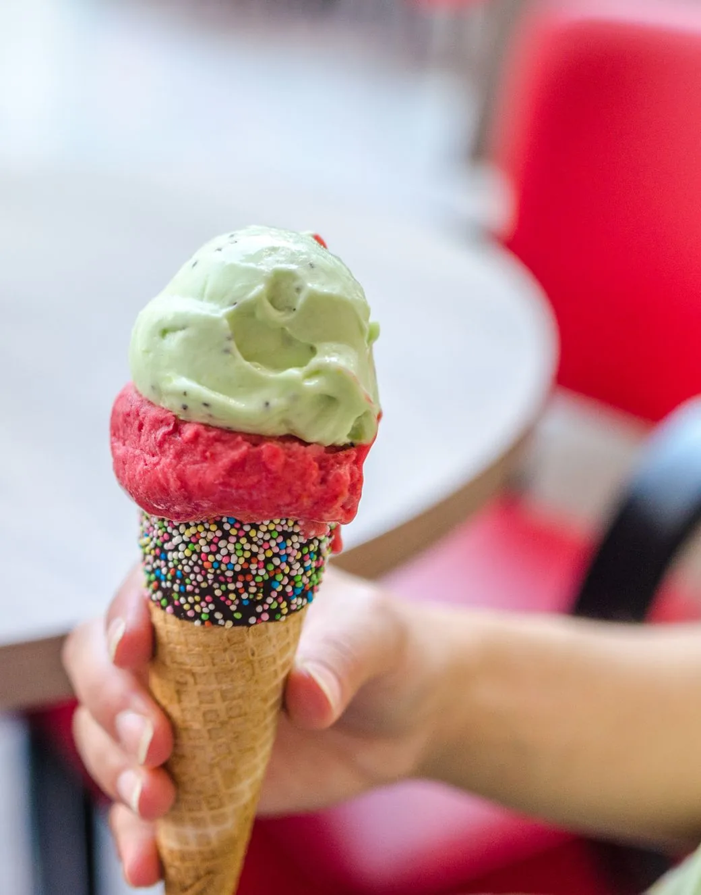
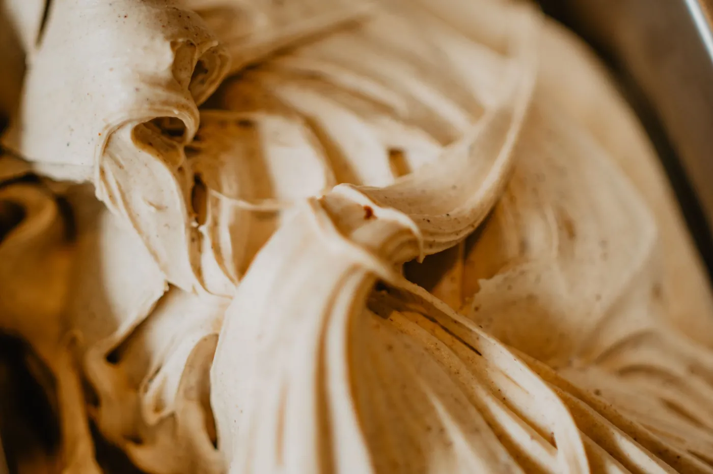
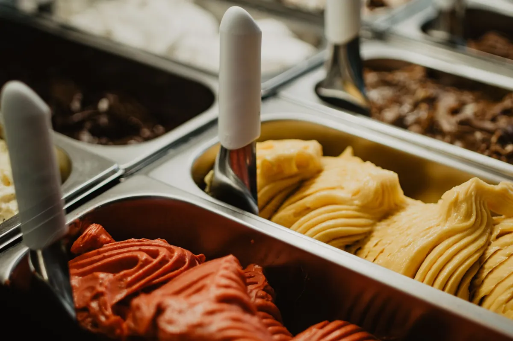
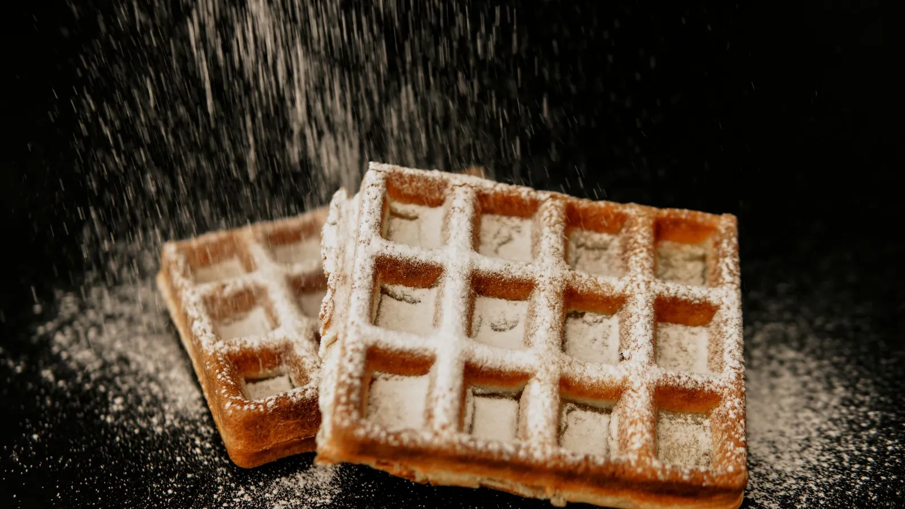
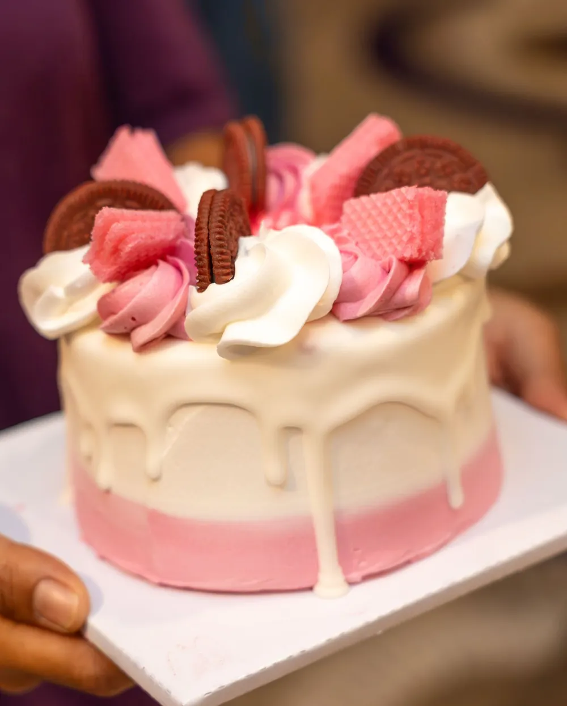

Elke dagvers gedraaid
Ambachtelijk melkijs, ijstaarten voor elk feest en nu het kouder wordt ook wafels en pannenkoeken. Crèmelien, dat zijn Martijn en Carolien.

op Google


Geleerd in Bologna,
gedraaid in Lommel
Goed ijs begint bij de basis. Wij maken melkijs zoals we het in Italië leerden, en we draaien het elke dag vers.
Behaald aan de Gelato University in Bologna, in januari 2014.
De basis van ons melkijs wordt eerst verwarmd. Dat geeft ijs dat zacht en romig blijft.
Ons ijs wordt elke dag opnieuw gedraaid. Daar proef je het verschil.

Koud buiten? Dan bakken wij wafels.
Als het ijsweer even voorbij is, ruikt het bij ons naar wafeldeeg. Kom binnen voor iets warms, of neem het mee voor onderweg.
Een ijstaart voor elk feest
Met een naam erop, een prent of als dripcake. Je kiest de grootte en bestelt alles rustig in onze webshop.

Zin in ijs om middernacht?
Aan onze ijsautomaat kan je dag en nacht terecht, ook als de zaak dicht is.
Herfst en winter
Nu van toepassing- Maandaggesloten
- Dinsdaggesloten
- Woensdag11 tot 18 u
- Donderdaggesloten
- Vrijdag11 tot 18 u
- Zaterdag11 tot 18 u
- Zondag11 tot 18 u
Lente en zomer
Het hele ijsseizoen- Maandaggesloten
- Dinsdag13 tot 21 u
- Woensdag13 tot 21 u
- Donderdag13 tot 21 u
- Vrijdag13 tot 21 u
- Zaterdag13 tot 21 u
- Zondag13 tot 21 u
Op feestdagen kan het anders zijn. Volg ons op Instagram voor het laatste nieuws.